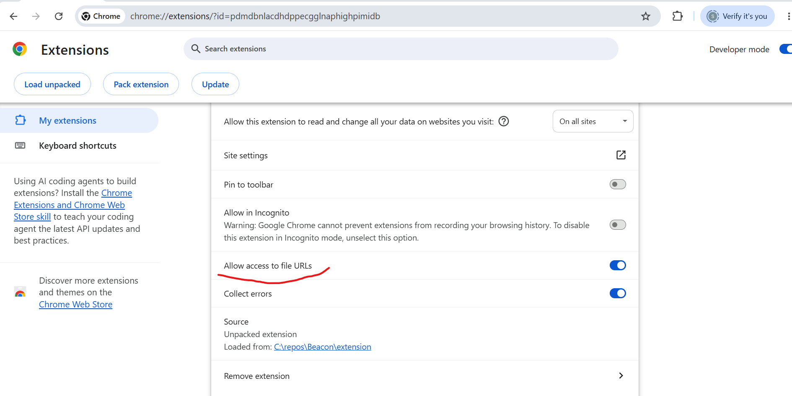

Developer Manual — Install, Run, and Extend
Beacon/ extension/ — the Chrome extension itself (Manifest V3) backend/ — FastAPI backend that calls the Claude API (deployed to Railway) docs/ — this manual, the user manual, and screenshots PROJECT_PLAN.md — full product spec, design principles, open questions
The extension already points at a deployed backend on Railway, so nothing needs to run locally just to try Beacon AI out.
chrome://extensionsextension/ folder from this repo

chrome://extensions, find Beacon AI → Details, and toggle "Allow access to file URLs" on.

The panel walks through a short setup automatically the first time: speech rate, page zoom, and contrast theme, each calibrated by trying it live and confirming it's comfortable. Redo this any time — say "redo setup" or click Redo Setup in the panel.


Chrome doesn't reliably prompt for microphone access from inside a side panel — a known Chrome limitation, not a bug in the extension. If voice input doesn't work the first time:

Say "help" or click "What can I say?" in the panel for a categorized command list. Quick starting points:
Only needed if you're changing backend code — the deployed Railway backend works out of the box otherwise.
cd backend python -m venv .venv # Windows .venv\Scripts\activate # macOS/Linux source .venv/bin/activate pip install -r requirements.txt cp .env.example .env # then edit .env and add your own ANTHROPIC_API_KEY uvicorn main:app --host 127.0.0.1 --port 8000
Then point the extension at your local backend — in extension/background.js, change:
const BACKEND_URL = "https://beacon-ai-production-4999.up.railway.app";
to:
const BACKEND_URL = "http://localhost:8000";
...and reload the extension. Switch it back before committing.
Sanity check: curl http://127.0.0.1:8000/health
The intent-matching logic (extension/lib/commands.js — every voice command's phrase matching) has a plain Node test suite, no browser needed:
cd extension node --test test/commands.test.js
There's no automated test suite for the rest of the extension (browser-side voice/AI/UI behavior) — that's verified by hand in Chrome, the appropriate surface for it.
extension/
manifest.json — MV3 config, permissions, side panel registration
background.js — service worker: tab commands (zoom/scroll/nav/navigateTo), AI backend
calls, page-content/PDF extraction caching, ambient zoom + contrast theme
content.js — injected into pages on demand; runs Readability.js extraction, plus
live-DOM link extraction for "list results" / "open result N"
lib/
commands.js — voice -> intent matching (regex-based), fully unit tested
pageCache.js — chrome.storage.session-backed extraction cache
Readability.js — vendored from @mozilla/readability
pdf.min.mjs, pdf.worker.min.mjs — vendored pdf.js, used for PDF text extraction
sidepanel/
sidepanel.html/js/css — the main UI: voice controls, onboarding, settings
mic-setup.html/js — the dedicated one-button mic permission page
test/
commands.test.js — intent-matcher unit tests
backend/ main.py — FastAPI app; single /query endpoint, Claude API call with prompt caching requirements.txt Procfile — Railway start command .env.example — copy to .env locally, fill in ANTHROPIC_API_KEY
See PROJECT_PLAN.md in the repo root for the full product spec, design principles, and open questions.